Добро пожаловать в Университет!
Здесь ты пройдёшь путь от «не знаю, как ломать блоки» до «строю фермы редстоуна». Обучение разбито на простые модули — выбирай вкладку сверху.
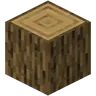
Основы выживания
Как добыть первый ресурс, сделать верстак и не умереть в первую ночь.
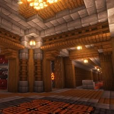
Биомы и ресурсы
Где искать алмазы, а где лучше строить базу. Полный гид по миру.
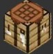
Крафт и механика
Интерактивная сетка крафта и редкие рецепты, которые легко пропустить.
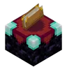
Зачарования
Как зачаровывать оружие и броню, какие книги искать и что они дают.
Что тебя ждёт внутри
- 7 разделов с теорией: основы, биомы, мобы, крафт, зачарования
- 6 мини-квизов с моментальной проверкой и подсчётом очков
- 4 интерактивных рецепта крафта на живой сетке 3×3
- Перетаскиваемый инвентарь — имитация игровой механики
- Чек-лист «День 1» с прогресс-баром
Основы игры
Главное правило: никогда не копай прямо под собой. Это убивает 90% новичков.
Управление
| Клавиша | Действие |
|---|---|
| W / A / S / D | Движение вперёд / влево / назад / вправо |
| Пробел | Прыжок |
| Shift | Присесть (не упадёшь с края) |
| ЛКМ | Ломать блок / ударить |
| ПКМ | Поставить блок / открыть сундук / съесть еду |
| 1–9 | Выбрать предмет из быстрого слота |
| E | Открыть инвентарь |
| Q | Выбросить предмет |
Первые шаги
- Добей дерево руками — нужно 4–5 блоков
- Сделай доски (1 бревно = 4 доски)
- Скрафти верстак (4 доски в сетке 2×2)
- Поставь верстак и сделай палки (2 доски вертикально)
- Сделай деревянную кирку и начни копать камень
- Сделай каменную кирку, топор, меч — они прочнее
- Построй убежище и поставь факелы до наступления ночи
Голод и здоровье
- Полоска голода важнее здоровья — если она пустая, здоровье не восстанавливается
- Сырое мясо восстанавливает мало голода, жарь его в печи
- Яблоки падают с дубовых листьев — собирай их, пока нет печи
- Если голод полон, здоровье регенерирует автоматически
Мини-практика: Собери инвентарь
Перетащи предметы в зону инвентаря ниже:
Зона инвентаря — перетаскивай сюда предметы
Гид по биомам
Мир генерируется случайно, но знание биомов сэкономит часы игры.
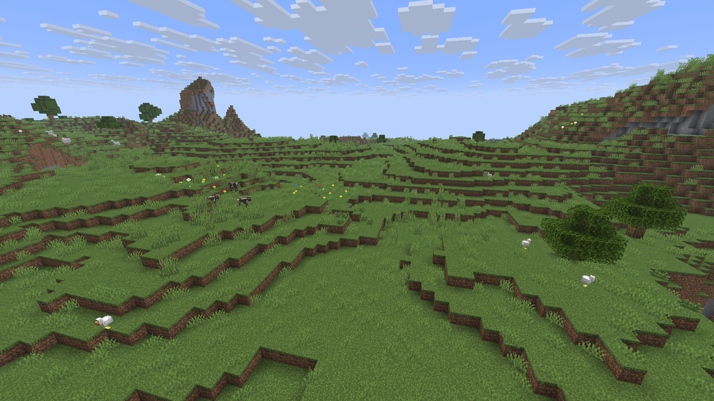
Равнина (Plains)
Лучший биом для старта. Много травы, овец, коров, лошадей. Часто встречаются деревни.
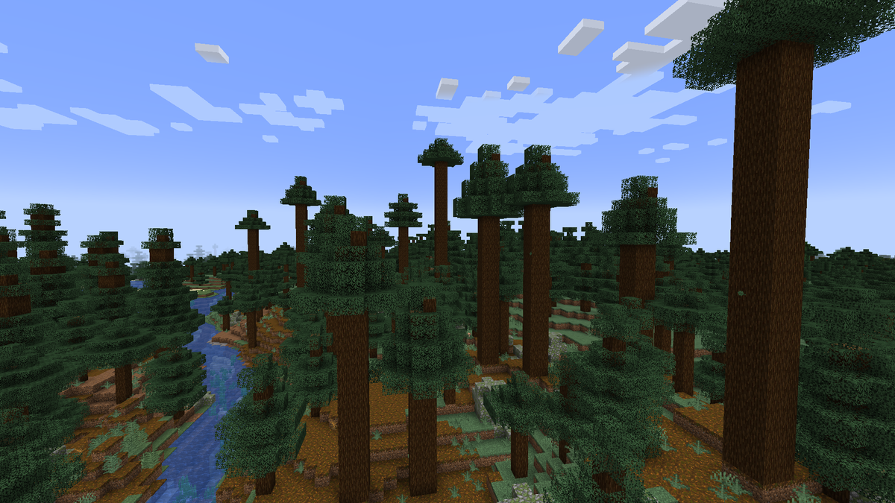
Тайга (Taiga)
Много елей, волков и лис. Зимой выпадает снег. Удобно для деревянной базы.
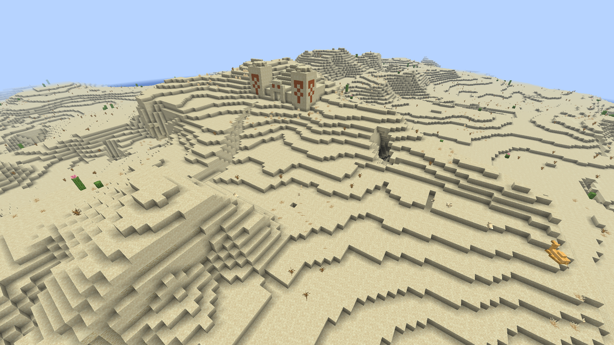
Пустыня (Desert)
Кактусы, песок, глиняные храмы с ловушками. Мало дерева — сложно для старта.
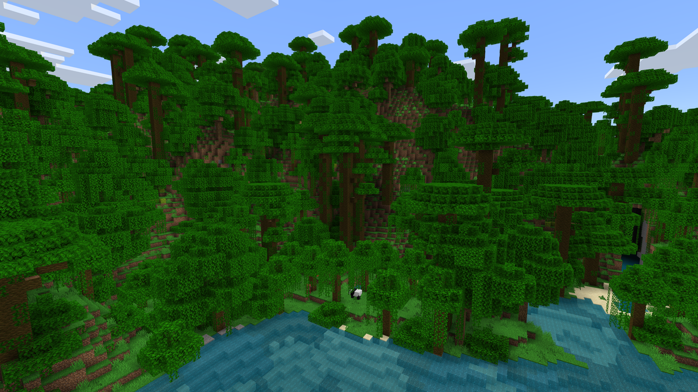
Джунгли (Jungle)
Самые высокие деревья. Оцелоты, попугаи, храмы и какао-бобы.
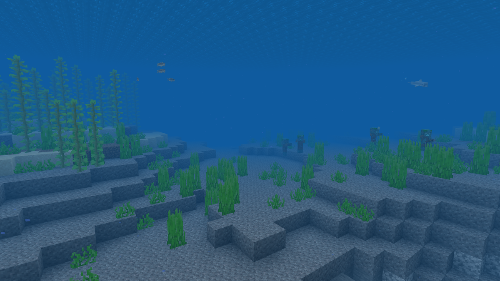
Океан (Ocean)
Рыба, водоросли, кораллы. Иногда — затонувшие корабли и подводные руины.
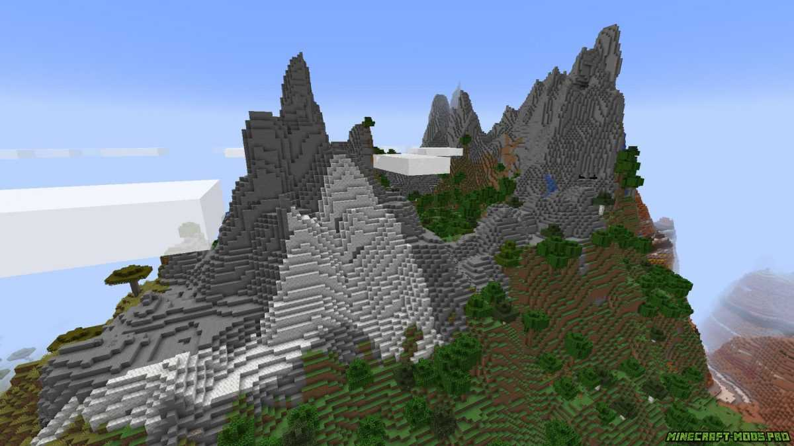
Горы (Mountains)
Высоко, красиво, есть изумруды. Опасно — высокий урон от падения.
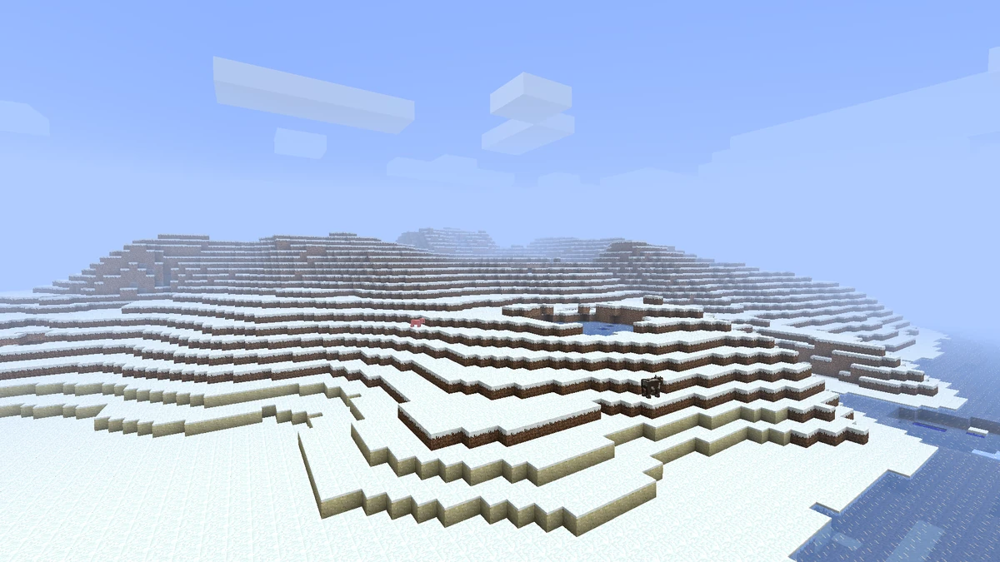
Тундра (Snowy Tundra)
Снег, лёд, белые медведи. Замёрзшая вода и редкая растительность.
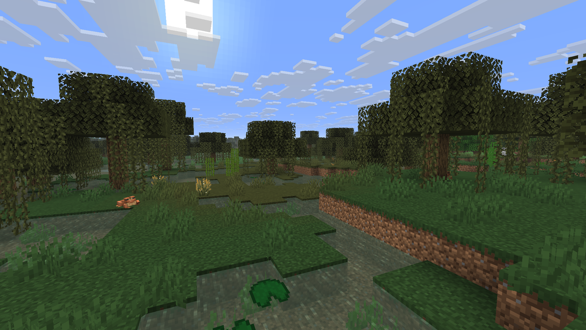
Болото (Swamp)
Тёмная вода, лилии, ведьмы. Здесь растут сахарный тростник и грибы.
Где что добывать
| Ресурс | Где искать | Инструмент |
|---|---|---|
| Дерево | Любой лес, равнина | Топор (руками тоже можно) |
| Камень | Под землёй, горы | Деревянная кирка и выше |
| Железо | Глубина 2–60 блоков | Каменная кирка и выше |
| Золото | Глубина 2–30, чаще в мезе | Железная кирка и выше |
| Алмазы | Глубина 2–16 блоков | Железная кирка и выше |
| Изумруды | Горы,Extreme Hills | Железная кирка и выше |
| Уголь | Любая высота под землёй | Деревянная кирка и выше |
| Лазурит | Глубина 2–30 блоков | Каменная кирка и выше |
Мобы: кто друг, а кто враг
Мобы делятся на три типа: мирные, нейтральные и враждебные. Знать их поведение — ключ к выживанию.
Мирные мобы
- Корова — кожа и мясо. Самый полезный моб для старта.
- Овца — шерсть для кровати и декора.
- Свинья — только мясо, но много.
- Курица — мясо и перья для стрел.
- Лошадь — можно приручить и ездить верхом.
- Оцелот / кошка — отпугивает криперов.
Нейтральные мобы
- Волк — если ударишь, нападёт. Можно приручить костями.
- Эндермен — нападает, если посмотреть ему в глаза или ударить.
- Пиглин — в Нижнем мире. Можно торговать золотом.
- Пчела — если разозлить, нападёт роем и отравит.
Враждебные мобы
| Моб | Чем опасен | Как бороться |
|---|---|---|
| Зомби | Бьёт в ближнем бою, приходит группами | Меч, дверь, свет |
| Скелет | Стреляет из лука издалека | Подбежать вплотную или щит |
| Крипер | Взрывается рядом с игроком | Убить до поджога, отойти на 3 блока |
| Паук | Лезет по стенам, атакует в прыжке | Меч, можно оградиться |
| Ведьма | Кидает зелья урона и яда | Лук, быстрая атака мечом |
| Житель-клоун | Кричит, призывает мобов | Не трогать, либо убить быстро |
Советы по выживанию
- Факелы каждые 7–8 блоков — мобы не спавнятся в светлых зонах
- Щит блокирует атаки скелетов и зомби — сделай его из досок и железа
- Кровать пропускает ночь — всегда носи с собой
- Крипер бесшумно подходит — слушай шипение и сразу отходи
Интерактивный крафт
Кликай по ячейкам, чтобы менять блоки. Пусто → Доска → Палка → Камень → Уголь → Пусто.
Рецепт 1: Деревянная кирка
- Верхний ряд: доска, доска, доска
- Средний ряд: пусто, палка, пусто
- Нижний ряд: пусто, палка, пусто
Собери рецепт: доски в верхнем ряду, палки по центру.
Рецепт 2: Верстак
- 4 доски в левом верхнем углу (сетка 2×2)
Поставь 4 доски в углу 2×2.
Рецепт 3: Печь
- 8 булыжников по кругу, центр пустой
Заполни все клетки камнем, кроме центра.
Рецепт 4: Факел
- Уголь сверху, палка снизу (по центру)
Уголь в верхнем центре, палка прямо под ним.
Зачарования
Зачарования улучшают оружие, инструменты и броню. Нужны стол зачарования, опыт и лазурит.
Как это работает
- Нужен стол зачарования (4 обсидиана + 2 алмаза + 1 книга)
- Положи предмет в слот и лазурит — появятся 3 варианта зачарования
- 1-й уровень — слабое, 3-й — самое мощное (нужно 30 уровней опыта)
- Чем больше книжных полок вокруг стола (до 15), тем сильнее зачарования
Лучшие зачарования
| Зачарование | Для чего | Эффект |
|---|---|---|
| Острота (Sharpness) | Меч | Дополнительный урон |
| Защита (Protection) | Броня | Снижает весь урон |
| Незойчивость (Unbreaking) | Всё | Предмет ломается медленнее |
| Эффективность (Efficiency) | Инструменты | Быстрее копаешь |
| Починка (Mending) | Всё | Чинится за счёт опыта |
| Шёлковое касание (Silk Touch) | Инструменты | Блоки падают целиком (стекло, лёд) |
| Удача (Fortune) | Кирка | Больше ресурсов из руды |
| Отдача (Knockback) | Меч | Отбрасывает врагов |
Советы
- Сначала зачаровывай железные предметы — алмазные побереги для лучших чар
- «Починку» нельзя получить на столе — только из книг в торговле или данжах
- «Удача» и «Шёлковое касание» несовместимы на одном предмете
- Наковальня объединяет зачарования с книгами и стоит опыт
Проверь себя: мини-квизы
Ответь на 6 вопросов. Счёт обновляется в реальном времени.
Квиз 1: Выживание
Квиз 2: Мобы
Квиз 3: Рецепты
Квиз 4: Биомы
Квиз 5: Опасности
Квиз 6: Зачарования
Чек-лист «День 1»
Выполни все пункты — и ты готов к комфортному выживанию.